POWERPOINT FOR MAC
A countdown.
On your slide.
A timer you can put directly on your slide. Choose the time and sound, resize it to fit, then click play when the activity begins.
Download setup ZIP
Includes both PowerPoint files · Desktop PowerPoint for Mac · Save as .pptm
Try it here. SET steps through presets, as in the slide show.
For a quick test: SET to 01:00, then − and play. Browser preview uses a synthesized chime.
Set up once in your presentation
Download and extract the setup ZIP. You need desktop PowerPoint on a Mac; this version does not run in PowerPoint for Windows, in a browser, or in an exported PDF.
The screenshots show a real setup in PowerPoint for Mac. Your presentation’s name will be different. Expand a step whenever you want to see where to click.
- Save your presentation as .pptm. In PowerPoint, choose File → Save As → PowerPoint Macro-Enabled Presentation. This format keeps the timer’s code.
Show the file-format screenshot
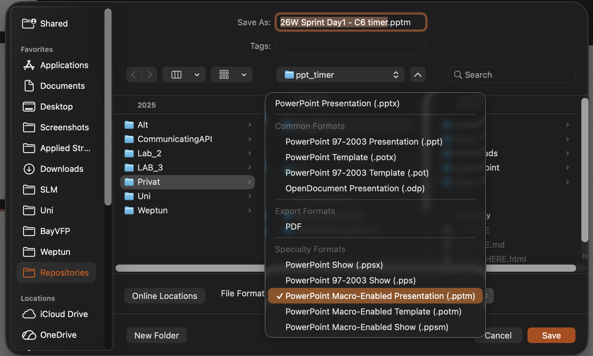
Choose this File Format, then click Save. Typing .pptm in the filename alone does not change the format. Click the image for a larger view.
- Open the Visual Basic Editor. Choose Tools → Macro → Visual Basic Editor. Find your presentation in the list on the left. If the list is missing, choose View → Project Explorer.
Show the PowerPoint menu
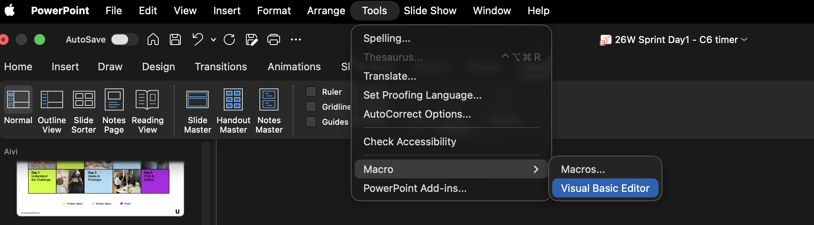
Use Tools → Macro → Visual Basic Editor in the Mac menu bar. Click the image for a larger view.
- Import both timer files. Right-click your presentation’s VBAProject entry and choose Import File…. Import SlideTimer.bas from the package’s powerpoint folder. Repeat for SlideTimerEvents.cls. You can also use File → Import File… if available. The first file creates the timer; the second safely cleans up when you close the presentation.
Show both imports and the finished result
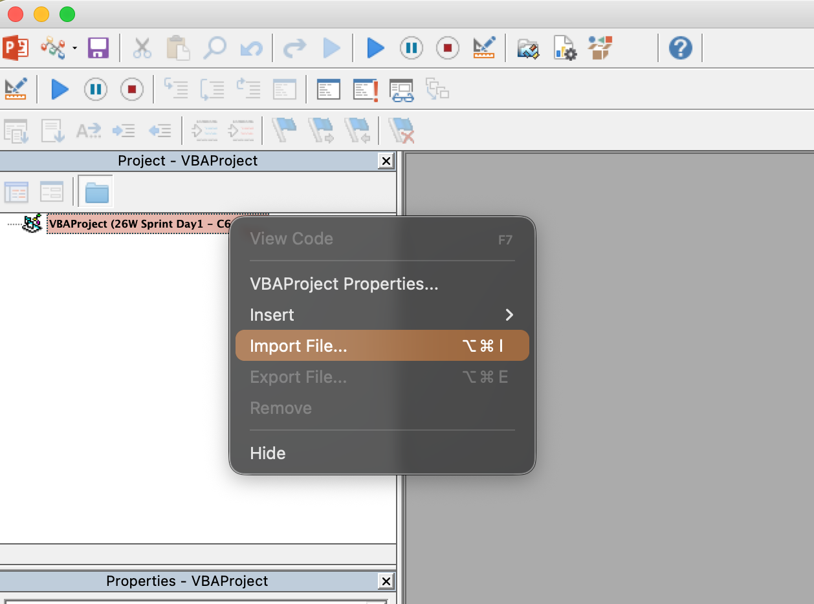
Right-click your own presentation on the left, then choose Import File…. Your presentation’s name will differ from the example. Click the image for a larger view.
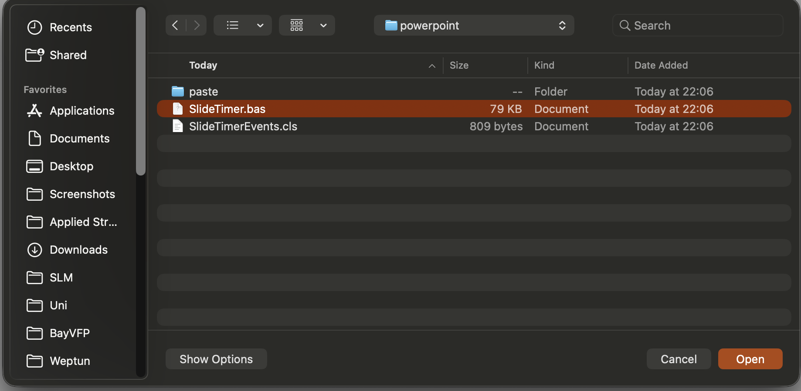
First choose SlideTimer.bas in the powerpoint folder, then click Open. Click the image for a larger view.
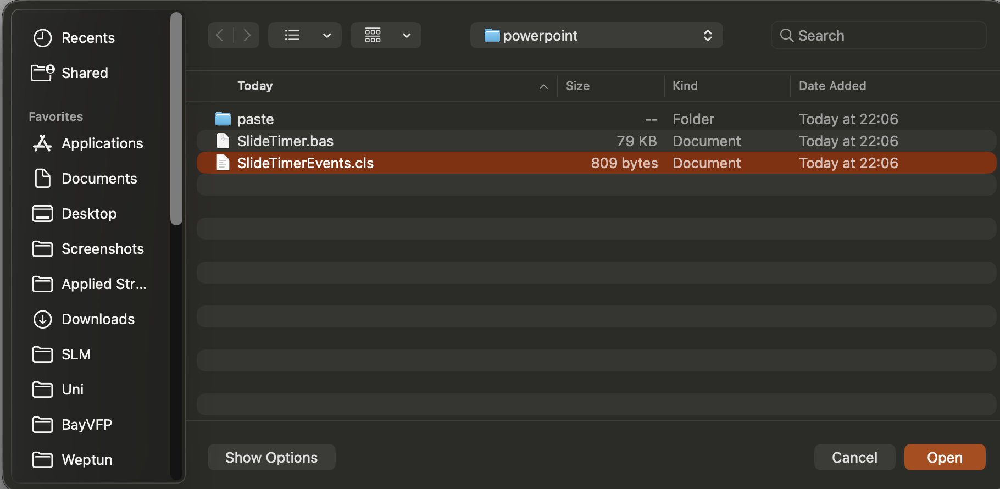
Repeat the import for SlideTimerEvents.cls. Both files are required. Click the image for a larger view.
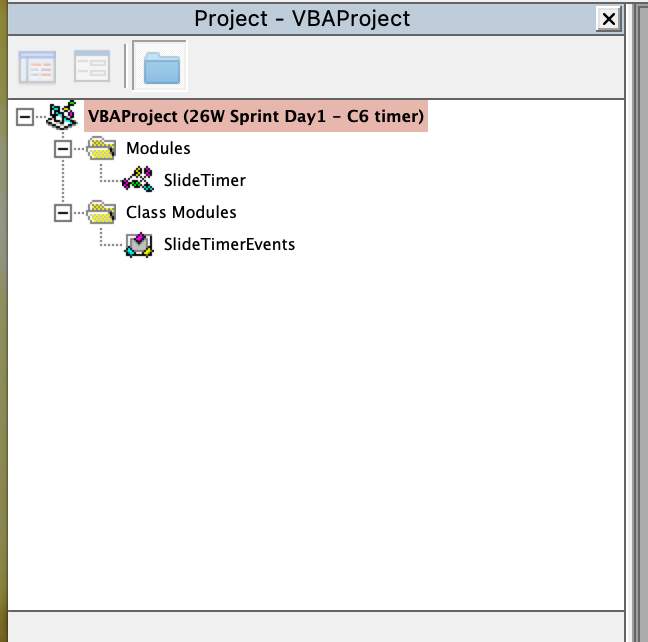
The result should show Modules → SlideTimer and Class Modules → SlideTimerEvents. You do not need to edit their code. Click the image for a larger view.
- Pick your slide. Return to PowerPoint’s normal editing view and select the slide for the timer. For an activity, try the Action-slide copy workflow below. Set the timer slide’s transition to None.
- Create the timer. Open Tools → Macro → Macros…, choose
Timer_Insert and click Run. Enter a duration, then choose an end sound by number or name. Type p 2 to preview Glass, 2 to choose it, or 0 for no sound.
Show the timer, duration and sound steps
Open Macros and run Timer_Insert
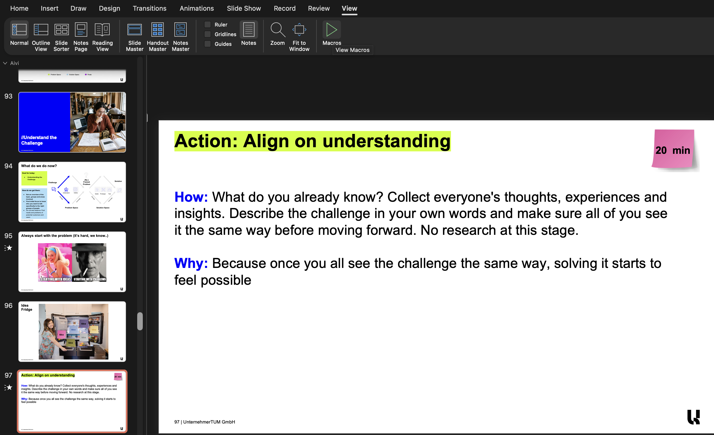
Select the slide for the timer, then open Tools → Macro → Macros… or use the View → Macros ribbon button shown here. Click the image for a larger view.
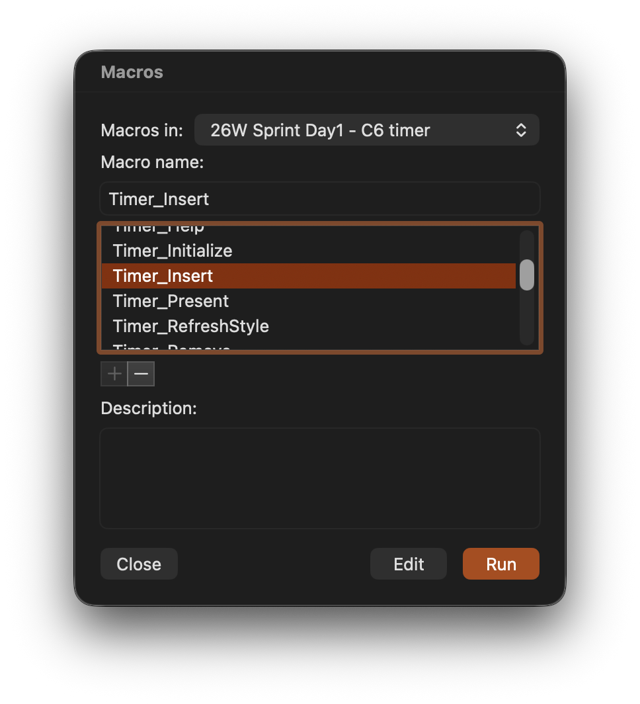
Choose Timer_Insert, then click Run. If needed, select your presentation in Macros in. Click the image for a larger view.
Enter the duration
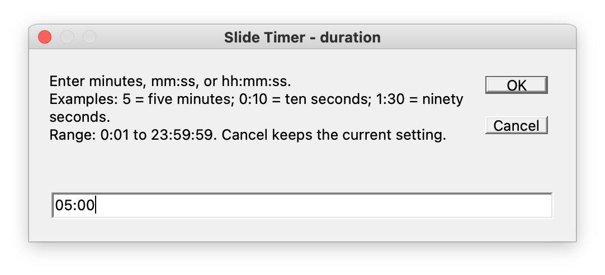
Enter your activity’s time. 3 means three minutes; 1:30 means ninety seconds; 05:00 in this example means five minutes. Click the image for a larger view.
Choose or preview the end sound
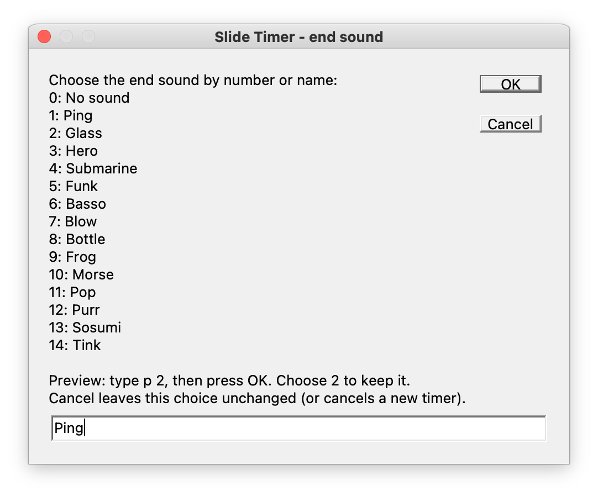
Choose a number or name and click OK. 2 selects Glass; 0 means no sound. Click the image for a larger view.
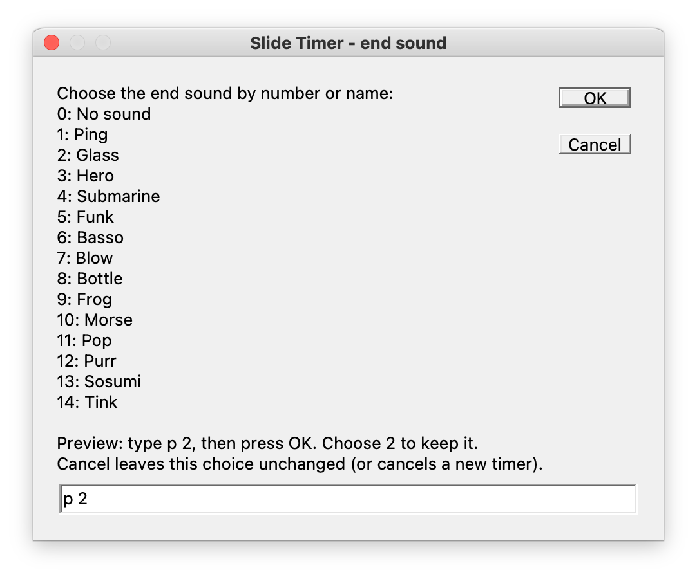
Enter p 2 and click OK to hear Glass. When the chooser returns, enter 2 or Glass and click OK to keep it. Click the image for a larger view.
- Move, resize and save. Select the whole timer group, drag it into place, and drag a corner handle to make it larger or smaller. See the selected timer and resize handles. Save the file.
- Present normally. Start the show using PowerPoint’s usual Slide Show commands. Click the timer’s play/pause button or digits to start, pause or resume.
Allow macros for this presentation if PowerPoint asks. You only add the two files once per deck; later shows need no startup macro. Copying the timer’s appearance to another deck does not copy its code.
Import File is unavailable: use the paste alternative
- In the Visual Basic Editor, select your presentation and choose Insert → Module.
- Open SlideTimer-Paste.txt, copy everything, and paste it into the new module’s code window. Set its (Name) to SlideTimer in the Properties window.
- Choose Insert → Class Module. In its Properties window, set (Name) to exactly SlideTimerEvents. Use View → Properties Window if needed.
- Open SlideTimerEvents-Paste.txt and paste everything into that class module. Return to PowerPoint and continue with choosing a slide above.
Use either importing or pasting. Doing both creates duplicate code.
Tip: put the timer on a copy of the Action slide
Keep the original Action slide for explaining the activity and answering questions. Right-click its thumbnail and choose Duplicate Slide. Add the timer to that copy, then advance to it when the activity begins. Participants can still read the same instructions while the countdown runs.
Resize it however you like
A small timer beneath the instructions keeps the activity easy to read. A larger timer is easier to see from the back of the room. In editing view, select the whole timer group, drag a corner handle to resize it, and drag the group to place it anywhere on the slide. Keep its parts grouped so the buttons and digits stay together.
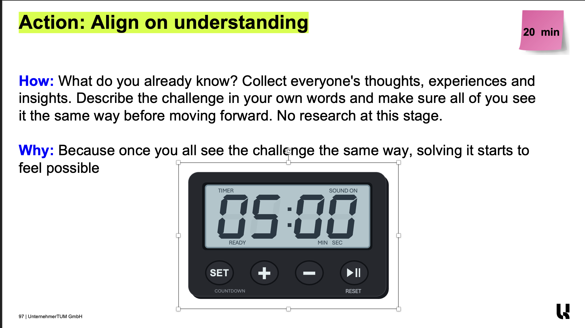
In editing view, select the whole timer group. Drag a corner handle to resize it and drag the group into position. Set the duration to match your own activity. Click the image for a larger view.
Use your timer
33 minutes
1:301 minute, 30 seconds
0:1010 seconds
1:02:031 hour, 2 minutes, 3 seconds
To change an exact duration later, select the timer’s slide in editing view and run Timer_Configure. To change or preview its sound, run Timer_ChooseSound. Choose 0 for silence; the choice is saved separately for each timer.
Sound through your chosen speakers
Choose the device in System Settings → Sound → Output on your Mac, and check media volume. Run Timer_TestSound on the timer’s slide to check it. Before presenting, try a short countdown with your actual external speakers or display.
Moving between slides or apps
A running timer keeps counting when you change slides, switch apps or briefly leave the show with Esc. Return to the same running, paused or finished state. Pause if you want it to stop counting. Closing the presentation ends the timer session. Keep the Mac awake during a countdown.
After a rehearsal, press RESET and save if you want the slide to open showing its full duration. You can duplicate a timer slide to reuse its layout, size and settings.
Help with common problems
The timer does not start when I click it
Use Slide Show view, allow macros, and save the file as .pptm. Make sure both timer files are in this presentation. In Presenter View, the clickable timer is on the audience slide display. The remote and spacebar navigate slides normally.
No sound, or sound comes from the wrong speakers
Check SOUND ON, then System Settings → Sound → Output and media volume. Select this timer’s slide in editing view and run Timer_TestSound. If playback still fails, run Timer_CheckCurrent for its error message.
PowerPoint says SlideTimerEvents is missing
Import SlideTimerEvents.cls too. For the paste route, it must be a Class Module named exactly SlideTimerEvents; a normal Module is different.
I am updating an existing timer
Replace both modules with the updated pair. In 1.2.2 or later, run Timer_Shutdown before changing code. If using 1.2.0/1.2.1 after a sound failure or crash, restart PowerPoint first and do not run that old sound/shutdown code. See the update guide for all steps.
After replacing files from 1.2.0–1.2.3, run Timer_Initialize once in editing view and save to remove the old hidden click-start animations. Later shows start normally.
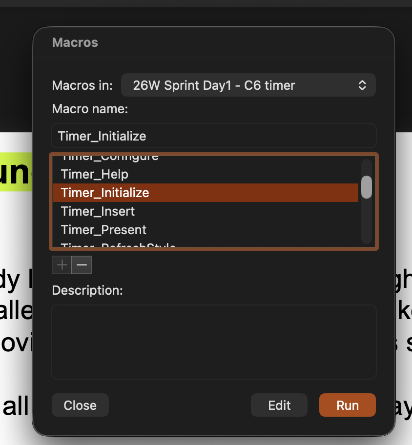
Updating an older timer only: run Timer_Initialize once after replacing code from 1.2.0–1.2.3. For a new timer, use Timer_Insert instead; later shows start normally. Click the image for a larger view.
A part is missing or the controls broke after ungrouping
In editing view, select the slide and run Timer_RefreshStyle. It rebuilds the timer and keeps its duration, sound, position and width. Resize and move it as one group afterward.
More help: setup · everyday use · troubleshooting. The browser preview above uses a synthesized chime; it is a demonstration, not a test of PowerPoint.